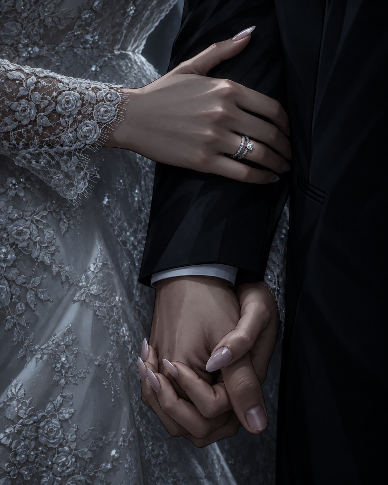

STORY
한 사람에게는 어제였고,
한 사람에게는 이미 끝난 사랑.
연애 3년, 결혼 4년.
우리는 분명 끝났다.
그가 기억하지 못하는 약 3년 동안 우리의 결혼은 서서히 무너졌고,
결국 서로 다른 길을 선택했다.
그런데 사고 후 다시 만난 그는 우리가 가장 행복했던 시절에 멈춰 있었다.

ORIGINAL STORY BY ALMONDSONGSONG
“우리가 끝난 걸
당신만 모른다.”
이혼 8개월 후,
전남편이 사고로 기억을 잃었다.
그런데 그는 아직도 나를 아내라고 부른다.
STORY
연애 3년, 결혼 4년.
우리는 분명 끝났다.
그가 기억하지 못하는 약 3년 동안 우리의 결혼은 서서히 무너졌고,
결국 서로 다른 길을 선택했다.
그런데 사고 후 다시 만난 그는 우리가 가장 행복했던 시절에 멈춰 있었다.